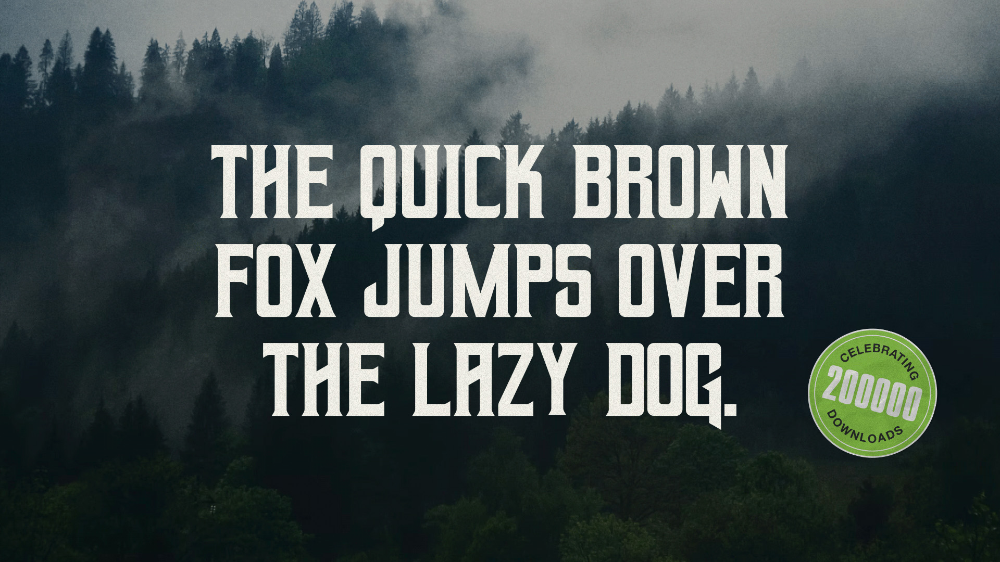
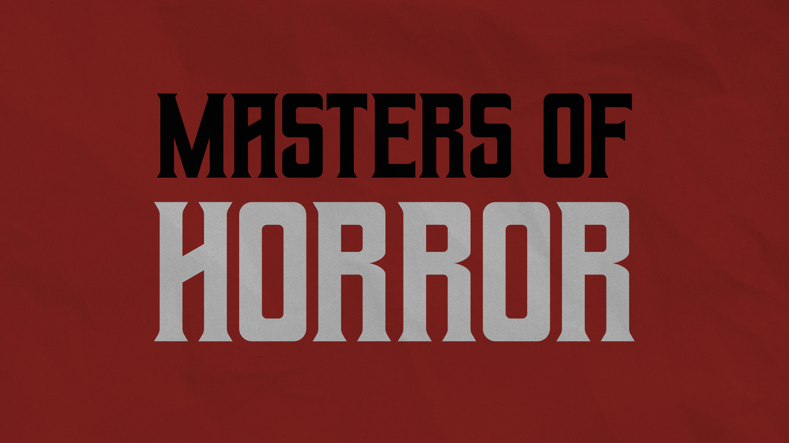
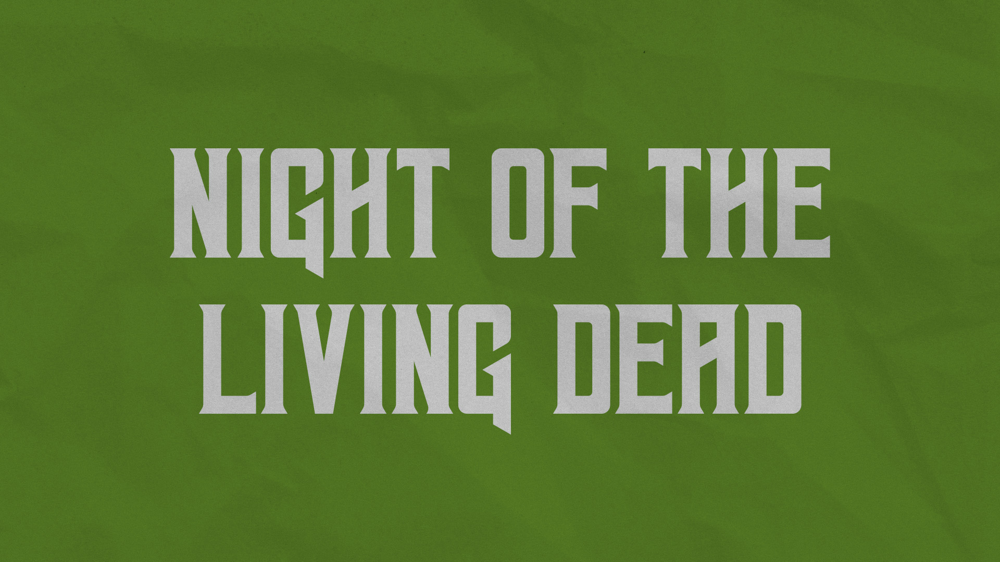
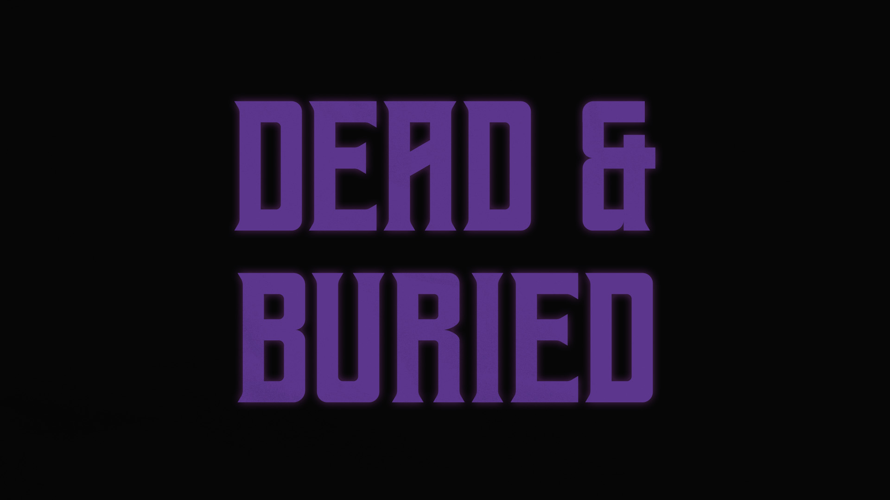

01. HOME — selected works → 02. ABOUT — more info → 03. RESOURCES — free downloads → 04. TWITTER — hot takes → 05. DRIBBBLE — more design → 06. LINKEDIN — business time →
This font was inspired by horror novels and heavy metal. It was named after Geezer Butler of Black Sabbath. But everyone (understandably) pronounces it "geiser." If I could do it over again, I would name it something else.
This project is probably my most popular work, with more than 200,000 downloads from Dafont alone. I've had the pleasure of seeing it used in the wild many times, and I always get a kick out of it.
DOWNLOAD VIA DAFONT →



